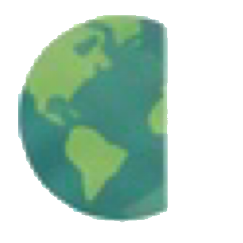

O que é a pegada ecológica?
A pegada ecológica é uma ferramenta de contabilidade ambiental que mede a quantidade de recursos naturais renováveis e de áreas produtivas (como terras agrícolas, florestas, pastagens e zonas de pesca) necessárias para sustentar o estilo de vida de uma pessoa, cidade ou país. WWF
Como é calculada?
A pegada ecológica é calculada somando a área de terra e de mar produtivas necessária para produzir os recursos que consumimos, como alimentos, energia e água, e para absorver os resíduos gerados. WWF
-
Alimentos
área de cultivo e pastagens
-
Energia
área para energia renovável e não renovável
-
Água
recursos hídricos envolvidos
-
Madeira e fibras
florestas e solos produtivos
-
Infraestrutura
área para cidades e construções
-
Resíduos
área para absorver os dejetos
Em números
Atualmente, a humanidade utiliza cerca de 1,7 planetas Terra para manter o seu estilo de vida.
Isso significa que estamos consumindo mais recursos do que o planeta consegue regenerar no mesmo período.

Por que isso importa?
Quando a pegada ecológica é maior do que a capacidade do planeta de se regenerar, os recursos naturais ficam esgotados, os ecossistemas se degradam e há perda de biodiversidade.
Reduzir a nossa pegada ecológica é garantir um futuro mais equilibrado, justo e sustentável para as próximas gerações.